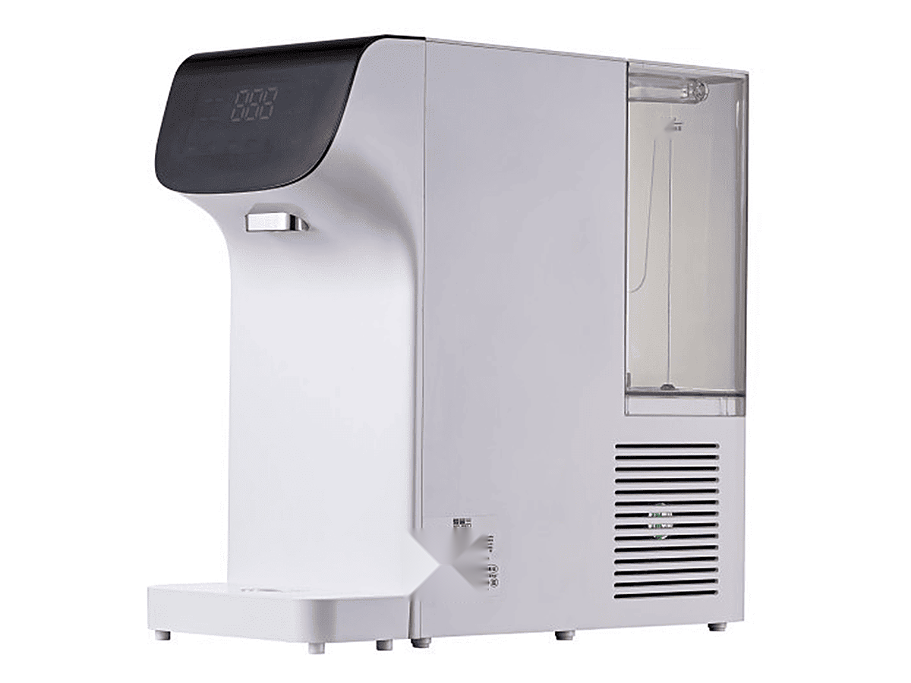

Настольные
НастольныеRP-C07
RO-очиститель с нагревательным кувшином
SKU: RP-C07
MOQ: уточняйте при запросе
Главная/Продукция/Настольные системы/ RP-C11

Настольные системы
RO-очиститель со свежемолотым кофе (M2405RN)
RP-C11 — RO-очиститель со свежемолотым кофе. Ключевая спецификация: производительность RO 50 / 100 / 200 GPD. Спецификации подтверждаются для каждой модели и заказа.
Напряжение / частота настраиваются под страну назначения. Другие конфигурации подтверждаются для каждого заказа.
RP-C11 — настольный RO-очиститель, который также варит свежий кофе, поэтому одна машина покрывает очищенную воду и кофе вместо двух отдельных приборов. Он выпускается в двух вариантах: модель со свежемолотым кофе и модель 4-в-1 «от зерна к чашке», которая очищает, мелет, экстрагирует и нагревает в одной установке. Вариант со свежемолотым кофе работает при 50, 100 или 200 GPD с номинальным объёмом очищенной воды 4000 л, и оба варианта нагревают воду по требованию. Он создан для владельцев брендов, которым нужен премиальный настольный продукт, выделяющийся на фоне стандартного очистителя воды.
Каков минимальный объём заказа?
Первый заказ — 200 единиц на модель, повторные заказы — 500 единиц.
Можно ли заказать образец до оптового заказа?
Да. Образцы готовы через 15 дней, стоимость образца возвращается при первом оптовом заказе. Оптовые заказы занимают 40 дней после утверждения образца и отгружаются FOB Шэньчжэнь.
Какой кофейный вариант выбрать?
Указывать как RP-C11 и уточнять вариант: свежемолотый кофе или «от зерна к чашке». Вариант «от зерна к чашке» — устройство 4-в-1.
Два настольных кофейных варианта — указывать как RP-C11 и уточнять вариант (свежемолотый кофе или «от зерна к чашке»).
Наведите курсор на изображение варианта, чтобы увидеть его спецификации. На сенсорных экранах коснитесь изображения.

Полные спецификации каждого варианта, рядом. Таблица спецификаций ниже показывает значения RP-C11.
| Спецификация | RP-C11-1 — свежемолотый кофе (M2405RN) | RP-C11-3 — вариант «от зерна к чашке» (Y521) |
|---|---|---|
| Функция | Свежемолотый кофе | Очистка, помол зёрен, экстракция и мгновенный нагрев — кофемашина 4 в 1 |
| Производительность RO | 50 / 100 / 200 GPD | 75 GPD |
| Поток очищенной воды | ≥0.13 / ≥0.25 / ≥0.52 L/min | 500 mL/min (комнатная температура); 400 mL/min (горячая вода) |
| Номинальная мощность | 2140 W | 2000 W |
| Размеры | 370 × 220 × 383 mm | 238 × 320 × 390 mm (W × D × H) |
| Номинальный объём очищенной воды | 4000 L | Подтверждается по заказу |
| Фильтрация | PP + CTO + PP + RO + C (мембрана RO Toray) | PCRO + PCP (= PCRO + C): 2 фильтра — фильтр 1 композитный (предфильтр + RO), фильтр 2 пост-угольный (опционально, улучшает вкус) |
| Бак воды | Бак исходной воды 4.8 L; бак чистой воды 1.2 L | 4.0 L |
| Нагрев | 20 L/h при ≥90°C | Толстоплёночный нагрев, мгновенный нагрев, ПИД-регулирование ±3°C |
| Капсула | — | Не входит в этот образец |
| Напряжение / частота | Настраивается под страну назначения | Настраивается под страну назначения |
| Другие особенности | — | 5 регулируемых настроек помола; давление насоса 15 Bar; бункер для зёрен 150 g; функция капсул не входит в этот образец |
9 строк спецификаций из каталога ROPureOEM.
| Производительность RO | 50 / 100 / 200 GPD |
|---|---|
| Выработка RO | ≥0.13 / ≥0.25 / ≥0.52 L/min |
| Номинальная мощность | 2140 W |
| Размеры | 370 × 220 × 383 mm |
| Номинальный объём очищенной воды | 4000 L |
| Мощность нагрева | 20 L/h при ≥90°C |
| Фильтрация | PP + CTO + PP + RO + C (мембрана RO Toray) |
| Напряжение / частота | Настраивается под страну назначения |
| Другие конфигурации | Подтверждается по заказу |
Спецификации взяты из каталога ROPureOEM. Если значение ещё не подтверждено, оно указано как «Подтверждается при заказе» — мы не публикуем неподтверждённые цифры.
НастольныеRO-очиститель с нагревательным кувшином
SKU: RP-C07
MOQ: уточняйте при запросе
 Настольные
НастольныеНастольный очиститель «всё в одном» со сменным картриджем
SKU: RP-C08
MOQ: уточняйте при запросе
 Настольные
НастольныеRO-очиститель с льдом, горячей и холодной водой
SKU: RP-C09
MOQ: уточняйте при запросе

НастольныеНастольный RO с компрессорным охлаждением
SKU: RP-C10
MOQ: уточняйте при запросе